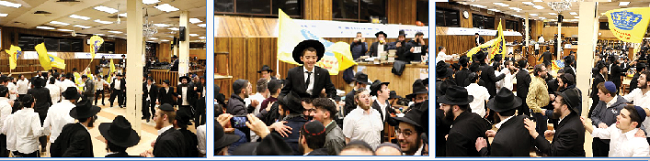

היום אחרי שחרית היו חמש התוועדויות–חגיגות, לרגל שלושת הנחות–תפילין של תלמידים מהשכונה, וכן ב’ חגיגות בר–מצווה מארה”ק.
היום אחרי שחרית היו חמש התוועדויות–חגיגות, לרגל שלושת הנחות–תפילין של תלמידים מהשכונה, וכן ב’ חגיגות בר–מצווה מארה”ק.

היום אחרי שחרית היו חמש התוועדויות–חגיגות, לרגל שלושת הנחות–תפילין של תלמידים מהשכונה, וכן ב’ חגיגות בר–מצווה מארה”ק.
השיעור היומי בדבר מלכות השבועי לקבלת פני משיח צדקנו נמסר היום ע”י הת’ חיים אברהם שי’ חלילי.
לאחר הסדרים מתיישבים התמימים להתוועדות וחגיגת בר–מצווה לתמימים מנחם מענדל שי’ גרנשטט, ומנחם מענדל שי’ בניסטי שהגיעו הנה, לחגוג את יומם הגדול במחיצת כ”ק אד”ש.
יום שני, ז”ך שבט
לאחר קריה”ת נערך מספר רב של “מי–שברך” ליולדות.
היום לאחר סדר נגלה בוקר, הגיעו לזאל קבוצת–ענק של מקורבים מברזיל בליווי שליח. כמובן שתמימים דוברי שפתם הנחו אותם וערכו להם סיור במקום יחד עם השליח.
בהפסקת ערב לאחר מעריב מתקיים השיעור הקבוע לתלמידי ה”קבוצה” בעניני גאולה–ומשיח. השיעור נמסר ע”י הת’ טובי’ שי’ גינזבורג.
בלילה לאחר הסדרים וסדר לקו”ש, מתקיימת ההתוועדות השבועית לחיזוק האמונה בכ”ק אד”ש ובתקנותיו הק’ בעניני גאולה ומשיח. ההתוועדות שמתקיימת בפינה הצפונית מזרחית בזאל, נפתחת בלימוד משותף של קטעים משיחות כ”ק אד”ש בעניני גאולה ומשיח, מתוך הקונטרס הנפלא “יחי המלך”. ונמשכת עד לשעות הקטנות של הלילה.
יום שלישי, כ”ח שבט
היום בשיעור בשורת הגאולה לפני שחרית, למדו את השיחה הידועה שהנה זה משיח בא ו”כבר בא” תיכף! כמובן שכשהכריזו “יחי” לאחר השיעור, הדהדה ההכרזה ונשמעה היטב ברחבי הזאל הגדול. ההכנות לשחרית במניין כ”ק אד”ש לאחר כזה שיעור, קיבלו חיזוק וריענון מיוחד.
לאחרי תפילת שחרית והריקודים התקיימה התוועדות בר מצוה במזרח 770, בהשתתפות אנ”ש והתמימים.
כמידי יום שלישי התקיים ראלי לחיילי צבאות ה’ בעזרת נשים איסטערן–פארקווי לקבלת פני משיח צדקנו.
היום נחת אצלנו משפיע מארה”ק, הרב ירון יחזקאל נאמן שי’, משגיח ראשי בישיבה גדולה חח”ל צפת. לפני סדר חסידות ערב נתלו מודעות שבישרו על התוועדות מיוחדת לתלמידי הקבוצה ב”געצל שול” אחרי הסדרים. בהתוועדות נכח קהל רב, והרבה בוגרים גם הגיעו.
בשעה 9:30, לאחרי סדר חסידות ערב התקיים שיעור “בענייני גאולה ומשיח” לדוברי אנגלית בפינה הצפונית מזרחית. השבוע השיעור נמסר ע”י הת’ יאיר שי’ הכהן כהן.
בשעה 10:30 לערך התקיימה התוועדות סיום הרמב”ם, שאורגן ע”י הרב מנחם שי’ גערליצקי.
יום רביעי, כ”ט שבט
הבוקר בשעה 7:15 התקיים ‘סדר השכם’ ענק, עם פארבייסען בשפע, לקבלת פני משיח צדקנו.
בשעה 1:00 מסר הראש הישיבה הרב שניאור זלמן שי’ לאבקובסקי את ה”שיעור כללי” במערב 770.
לאחרי תפילת מנחה והריקודים התקיים שיעור דבר מלכות במזרח 770 עם פארבייסען בשפע לקבלת פני משיח צדקנו. היום השיעור נמסר ע”י הת’ דוד שי’ מיכאלי.
גם היום במהלך אחר הצהריים הגיעות קבוצת מקורבים, אחת מיני רבות הבאות לשאוב חיות. הם הגיעו הנה מארה”ק, וכמובן שניגשו אליהם והסבירו להם על מעלת המקום והזכות שנפלה בחלקם, לאחר סיור קצר התיישבו לכתיבת מכתב לכ”ק אד”ש וביקשו את ברכתו הק’.
לפני מעריב נתלו ב–770 מודעות המזכירות על אמירת “יעלה ויבא” כרגיל.
איך שהסתיים סדר חסידות ערב, החלה התוועדות וחגיגת בר מצווה לת’ לוי יצחק הכהן שי’ כהן בשעה עשר ועשרים החלו הריקודים. כמובן רבים מהתמימים ואנ”ש הגיעו להשתתף בריקודים כהוראת כ”ק אד”ש. על הקלידים היה הת’ מענדי שי’ קורנט.
לאחר הריקודים שהיו בעוצמה רבה, התקיים בקומת המרתף השיעור הקבוע בדא”ח עם הרה”ת ר’ יקותיאל פלדמן שי’ לתושבי השכונה. מקרנין לראות את אותם בעלי–בתים העמלים קשה לפרנסתם ולא מוותרים על השיעור השבועי בתורת החסידות.
לאחר הריקודים בשעה 11:20 לערך המשיכה התוועדות בר מצוה לת’ הנ”ל.
היום בהפסקת ערב, ראיתי מחזה שהפעים אותי. הוא הוכיח לי בפעם המי–יודע כמה, את גודל ותוקף אהבת התמימים לכ”ק אד”ש. כבכל יום מתקיים שיעור בעניני גאולה ומשיח לתלמידי הקבוצה בהפסקה. שיעור זה מנוהל ביד רמה ע”י האחראי המסור הת’ שי שי’ רובין. היום שמתי לב שזה לא השיעור היחיד. במערב 770 מתקיים שיעור לבוגרי ישיבת תות”ל קריית גת. וכן עוד שיעור לקבוצת התלמידים הבוגרים שנשארו לשנים נוספות (מעבר לשנת ה”קבוצה”) ב–770. שיעור זה מתקיים בסמוך לבימת ההתוועדויות. בהקשר לכך נזכרתי באימרה חסידית אותה שמעתי אתמול “מרגלא בפומיה של המשפיע ובעל מסירות–נפש ר’ מענדל פוטערפאס ע”ה, ש”צריך להקשיב לצעירים”. היום קצת התחוורה לי הסיבה. התמימים חיים בעולם אחר. גם את ההפסקות הם מעניקים ובהידור לרצון כ”ק אד”ש. הכל למען זירוז התגלותו המושלמת.
יום חמישי, אדר”ח אדר
במנחה במנין כ”ק אד”ש נכחה כיתת ילדים מת”ת “אהלי תורה” (כרגיל שם, שביומי דפגרא זוכה אחת מהכיתות לבוא ולהשתתף במניין כ”ק אד”ש). עצם ביאתם גורם לכולנו להיזכר בגודל הזכות לשהות בדל”ת אמותיו הק’ של כ”ק אד”ש, רוב שעות היממה. זיכרון זה מעורר אצל כולנו ובמשנה תוקף את הגעגועים העזים לחזות באור פני מלך חיים. לאחרי התפילה והריקודים התקיים שיעור דבר מלכות הקבוע לקבלת פני משיח צדקנו.
לאחר סדר חסידות ערב, התקיים השיעור השבועי בעניני גאולה ומשיח לעיון. השיעור החל בשעה 10:00 במערב 770. השיעור נמסר בטוב טעם ע”י הרה”ח ר’ נועם וואגנר שי’ מדרום–אפריקה.
הריקודים של חודש אדר החלו אחרי השיעור, בשעה 10:45 ונמשכו עד לשעה 12:20 לערך. הריקודים היו כמובן בשיא ה”שטורעם” כרגיל, ובשלב מסוים, בעת הניגון שחובר לחיי”ם שנה: “כי אורך ימים… חיי”ם שנה שירו לאלוקים… זמרו שמו”, הרקיעה השמחה שחקים. דבר שהזכיר לכו”כ את הריקודים בליל י”א ניסן. לאחר הריקודים התקיימה בחדר האוכל התוועדות לתלמידי ה”קבוצה”, עם הרב נאמן שי’. כמידי ליל שישי התקיימו מספר התוועדויות ב–770.
יום שישי, בדר”ח אדר, א’ אדר
בשעה 7:45 בבוקר התקיים ‘סדר השכם’ מיוחד לתלמידי הקבוצה, עם כיבוד קל, לקבלת פני משיח צדקנו.
לאחר התפילה יצאנו למבצעים. לפרסם ולהפיץ את בשורתו של כ”ק אד”ש אודות בואה הקרוב של הגאולה והחובה של עצמנו להתנהג בהתאם. באחת החנויות בה המוכר הוא ידיד שלנו, שוחחנו איתו על משמעות השמחה בחודש אדר, השונה משאר מועדי השנה שלא רוקדים כל החודש בגלל חג שחל בו. “והסיבה לזה, היא כיון שבחודש זה נולד משה רבינו” (ז’ אדר תשמ”ח). על כזה דבר, בגלל כזה מאורע, אנו שמחים חודש שלם. לא רק בגלל פורים. זה הסוד של “החודש” - אשר “נהפך”. לסיום הסברנו לו שגם כיום יכול הוא להתקשר ו”לחייג” למשה רבינו. ה”מספר” שלו הוא בעצם ההוראות שלו. וכמובן להירתם למאמץ המשותף להבאת הגאולה. התוועדנו עם המקורבים והתחלנו כבר לתאם איתם על חגיגת פורים וקריאת המגילה בבתיהם. “וזה לא סותר לביטחון שלנו שעכשיו משיח מגיע”. אנחנו עושים כל התלוי בנו (כמו שביאר כ”ק אד”ש לפני עשרים ושבע שנה בהתוועדות ש”פ תרומה ב’ אדר תנש”א).
ליל שבת
לקראת השבת, הגיעה ל–770 קבוצה של מקורבים מצרפת, בליווי השליח ר’ יוסף יצחק שי’ פבזנר.
בשירת ה”יחי” לפני התפילה הורגשה היטב הצפיפות בסמיכות למקומו של כ”ק אד”ש עקב ריבוי קבוצות שהגיעו הנה. התפילה החלה בשעה שש כמתוכנן. לפני התיבה עבר ר’ אהרן שי’ לושאק. ב”לכה דודי” החל הש”ץ לשיר לכה דודי במנגינת “ויהי בימי אחשוורוש”, ו”בלא תבושי”, הוחלפה המנגינה למנגינת “חיילי אדוננו”. לאחר ה”לכה דודי” האחרון, התפרצה שירת ה”יחי” מפיות הקהל כולו, שהושרה בהתלהבות אל מול פני הקודש למשך כשמונה דקות רצופות. התפילה הסתיימה בהכרזות הגבאי ר’ זלמן שי’ ליפסקער אודות ה”שלום–זכר’ס”, וכן על תפילת שחרית, השעון הורה על השעה 6:36. הריקודים לחודש אדר התקיימו מיד לאחר התפילה, למשך דקות ארוכות.
יום ש”ק פר’ תרומה, ב’ אדר
סדר חסידות התקיים כרגיל, והתמימים ישבו ושקדו על ה”דבר מלכות” השבועי.
התפילה החלה בשעה 10:00. לפני התיבה עבר ר’ אליהו שי’ איידלמאן. הלה ניגן את “האדרת והאמונה” במנגינה הידועה. בא–ל אדון ניגנו במנגינת “ויהי בימי אחשורוש”. בממקומך ניגנו ניגון שאמיל. בשים שלום ניגנו בניגון הידוע. לקריאת התורה הוציאו את הס”ת של משפחת ליאני שי’. עלו 5 חתנים (שלישי - שביעי).
בתפילת מוסף עבר ר’ זלמן שי’ סנדהויז. ניגנו הוא אלוקינו (כרגיל). בסיום התפילה ר’ נחום קפלינסקי שי’ קרא קטע בגאומ”ש וכן הכריז אודות התוועדות כ”ק אדמו”ר מלך המשיח שליט”א בשעה 1:30, וכן על מנחה בשעה 4:55. התפילה נגמרה בשעה 12:10. לאחר התפילה והריקודים החלו הבחורים לסדר את הזאל להתוועדות קודש של כ”ק אד”ש.
התוועדות קודש
אחת וחצי. כולנו ניצבים. עומדים. מוכנים לשמוע את כ”ק אד”ש. מרימים כוס לחיים, ומאחלים לכ”ק אד”ש אך רוב נחת ושנזכה לעשות את רצונו הק’ ועיקר העיקרים: שתהיה ההתגלות אליה מצפים כל העם היהודי, אליה ייחלו אבותינו שנות דור.
מנחה החלה בשעה 4:55. בקריה”ת לראשון ושני עלו חתני בר מצוה, ולשלישי עלה חתן. כמידי שבת, מתקיים לאחר מנחה סדר ניגונים וחזרת דא”ח במרכז 770.
מוצאי שבת קודש
מעריב החל בשעה 6:15. לפני התיבה עבר ר’ אליעזר שי’ טיפענברון. בסיום התפילה הכריזו החיילי צבאות ה’ יחי.
לאחר התפילה הוקרן מראות קודש מכ”ק אדמו”ר מלך המשיח שליט”א בשנים הקודמות. אחרי הוידאו התקיימו הריקודים של חודש אדר ברוב שירה וזמרה, עם כלי זמר. הריקודים החלו בשעה שבע ורבע ונמשכו כשעה. לאחמ”כ הכריזו חיילי צ”ה י”ב הפסוקים והקהל ענו אחריהם.
סדר נגלה החל מעט מאוחר עקב הריקודים ולכן לא התקיים השיעור הקבוע ב”עין יעקב” (לימוד שכדברי כ”ק אד”ש מזרז את הגאולה), אך שיעור ב”דבר מלכות” השבועי התקיים כרגיל.
במהלך הלילה כרגיל התקיימה התוועדות סיום הרמב”ם שאורגנה ע”י הרב מנחם שי’ גערליצקי.
•
אבא, זהו סיכומו של שבוע ב–770. נכנסנו לחודש אדר, האווירה השמחה בלאו–הכי מהפנמת הזכות לשהות אצל כ”ק אד”ש, השורה עלינו במשך כל השנה, גודלת בימים אלו בכמה רמות. היא מתבטאת בריקודים ובהוספה בלימודים באותם “פקודי הוי’ ישרים” אשר “משמחים לב”.
בדבר מלכות השבועי, ש”פ תרומה תשנ”ב, מגלה לנו כ”ק אד”ש שמהותו של כל יהודי בכל מצב שלא יהיה, הוא “זהב”. ממילא הוא עשיר הן ברוחניות והן בגשמיות, כל שמצופה מאיתנו הוא שניקח עובדה זו ברצינות. ונגלה אותה. זה הכל. וזה באמת הכל. וע”י ההתקשרות לכ”ק אד”ש שהוא המעניק ומגלה בכל יהודי את “עשירותו”, נזכה כולנו לגאולה האמיתית והשלימה -
בתקווה להיפגש איתך בהתוועדות כ”ק אד”ש בבית המקדש (כידוע שהדבר הראשון שמשיח יעשה זה פארבריינגען) ותיכף ומיד ממש ושמחת עולם על ראשם.
יחי אדוננו מורנו ורבינו מלך המשיח לעולם ועד
דוידי
ארצות החיים - 770 - בית משיח